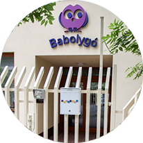

<!DOCTYPE html>
<html lang="en">
  <head>
    <meta charset="utf-8">
    <meta http-equiv="X-UA-Compatible" content="IE=edge">
    <meta name="viewport" content="width=device-width, initial-scale=1">
    <title>babolygo</title>
  <head>
    <title>Tabs</title>
    <link href="css/bootstrap.min.css" rel="stylesheet">
    <link href="css/custom.css" rel="stylesheet">
  </head>
  <body>
 <!--navigation starts-->
     <div class="container-fluid">
         <div class="container">
<div class="row">
      <nav class="navbar navbar-default" role="navigation">
            <div class="navbar-header">
               <a href="index.php"></a>                <button type="button" class="navbar-toggle" data-toggle="collapse" data-target="#collapse">
                    <span class="sr-only">Toggle navigation</span>
                    <span class="icon-bar"></span>
                    <span class="icon-bar"></span>
                    <span class="icon-bar"></span>
                    <span class="icon-bar"></span>
                </button>
        </div>
            <div class="collapse navbar-collapse" id="collapse">
               <ul class="nav navbar-nav navbar-right jelentkezes">
              <li><a href="#">Jelentkezés</a></li>
              </ul>
            	<ul class="nav navbar-nav navbar-right">
                	<li class="active"><a href="#">A Babolygóról</a></li>
                    <li><a href="#">Filozófiánk</a></li>
                    <li><a href="#">Válaszok</a></li>
                    <li><a href="#">Galéria</a></li>
                    <li><a href="#">Áraink</a></li>
                    <li><a href="#">Kapcsolat</a></li>
              </ul>
            </div>  
      </nav>
        </div>         </div>
  </div>
  <!--navigation ends-->
    <div class="container">
      <ul class="nav nav-tabs responsive" id="myTab">
        <li class="test-class active"><a class="deco-none misc-class" href="#bemutatkozunk">Bemutatkozunk</a></li>
        <li class="test-class"><a href="#kornyezet">Környezet</a></li>
        <li class="test-class"><a href="#evritmusa">Az év ritmusa</a></li>
        <li class="test-class"><a href="#hetritmusa">A hét ritmusa</a></li>
        <li><a class="deco-none" href="#napritmusa">A nap ritmusa</a></li>
      </ul>
      <div class="tab-content responsive">
        <div class="tab-pane fade in active" id="bemutatkozunk">
<!--tab content bemutatkozunk starts-->
    <div class="row content">
    <div class="row whiteBg">
    <div class="col-xs-12 col-sm-6 col-md-6 col-lg-6">
    
<h1><strong>Simor Diána vagyok,
        </strong><br>
        a Babolygó Óvoda egyik megálmodója </h1>
       <p> A Babolygó megszületésével régóta dédelgetett álmom válik valóra. Itt termékennyé válhat a tehetségem egy olyan hivatásban, ami örömet szerez nekem is. 1985-ben születtem, érettségi és diploma után négy évig dolgoztam magánóvodában, 2011-ben született Panni lányom.</p>
        <p><strong>Szerintem jó óvoda az, </strong><br>
ahol szabadon, örömmel, szeretetben lehetünk együtt, teret kapunk ahhoz, hogy önmagunkká váljunk - felnőttek és gyerekek egyaránt. Legfontosabb feladatom, hogy hiteles, követésre méltó mintává váljak a gyerekek számára. Felelősen és tudatosan képviseljem a nyitottságot, elfogadást, ehhez pedig biztonságos, inspiráló, a gyerekek életkori sajátosságaihoz igazodó, 
mégis életszerű környezetet teremtsek. </p>
    </div>
    <div class="col-xs-12 col-sm-6 col-md-6 col-lg-6">
        
      <h1><strong>Anga Györgyi vagyok,
        </strong><br>
        a Babolygó Óvoda másik megálmodója</h1>
        <p>Tanulmányaimat a kazincbarcikai Óvónőképző Szakközépiskola elvégzése után, a Sárospataki Tanítóképző Főiskolán folytattam, itt szereztem óvodapedagógusi diplomát, jelenleg a BME pedagógiai tanszékén, Közoktatási Vezető Szakon tanulok. Több mint tíz évet dolgoztam óvodapedagógusként. Állami óvodában kezdtem, majd magánóvodában helyezkedtem el, ahol öt évet töltöttem. Két lányom van, Vilma 11 éves, Amália 3 éves</p>
       <p> <strong>Szeretném ha a Babolygó olyan hely lehetne, 
</strong><br>
       ahol a gyermekek életében a főszerepet a játék kapja, hogy ezen keresztül tapasztalhassák meg a környező világot. Hiszem, hogy a gyermek nem kicsinyített, félig kész felnőtt, hanem életkorának megfelelően egy teljes egész lény, akinek világlátása és ítéletalkotása sajátos, és nem mérhető felnőtt mércével. </p>
    </div>
        <div class="col-xs-12 col-sm-6 col-md-6 col-lg-6">
        
    <h1><strong>Balogh Emese vagyok,</strong><br />
      a Babolygó Óvoda csoport felelőse</h1>
 <p>A Babolygó megszületésével régóta dédelgetett álmom válik valóra. Itt termékennyé válhat a tehetségem egy olyan hivatásban, ami örömet szerez nekem is. 1985-ben születtem, érettségi és diploma után négy évig dolgoztam magánóvodában, 
2011-ben született Panni lányom. <br />
      <br />
      <strong>Szerintem jó óvoda az, </strong><br />
      ahol szabadon, örömmel, szeretetben lehetünk együtt, teret kapunk ahhoz, hogy önmagunkká váljunk - felnőttek és gyerekek egyaránt. Legfontosabb feladatom, hogy hiteles, követésre méltó mintává váljak a gyerekek számára. Felelősen és tudatosan képviseljem a nyitottságot, elfogadást, ehhez pedig biztonságos, inspiráló, a gyerekek életkori sajátosságaihoz igazodó, <br />
mégis életszerű környezetet teremtsek.</p>    </div></div>
       </div> 
<!--tab bemutatkozunk ends--> 
      </div>
        <div class="tab-pane fade" id="kornyezet">
<!--tab content kornyezet starts-->
    <div class="row content">
    <div class="row whiteBg">
    <div class="col-xs-12 col-sm-6 col-md-6 col-lg-6">
    
<h1><strong>Az épület </h1>
       <p> A Budapest XII. kerületi Tamási Áron u. 41. sz. alatt álló épület az elmúlt év során teljes felújításon esett át, hogy a gyerekek egy korszerű, kellemes, zöld környezetben lévő helyre érkezzenek. Itt korábban is óvoda működött. Részben Európai Uniós pályázati forrásból, részben befektetők segítségével olyan környezetet alakítottunk ki, ahol tágasak, világosak terek.</p>
        <p>A játékok és a berendezési tárgyak főként természetes anyagokból készültek, hogy segítsék a harmonikus, otthonos környezet megteremtését. A gyerekek asztalait, székeit, szekrényeit, egyéb berendezési tárgyait, egyedi bútortervező készíti a Babolygónak.</p>
    </div>
    <div class="col-xs-12 col-sm-6 col-md-6 col-lg-6">
        
      <h1><strong>Megközelítés</h1>
        <p>Az óvoda a 112-es és a 102-es busszal is megközelíthető, a megállók 200 méterre vannak az épülettől.</p>
      <h1><strong>Parkolás</h1>
        <p>Közvetlenül az óvoda épülete előtt számtalan ingyenes parkolóhely áll az érkezők rendelkezésére.</p>
    </div>
    </div>
    </div>  
    <!--tab kornyezet ends-->
        </div>
         <div class="tab-pane fade" id="evritmusa">
          <br>
          <ul>
            <li>Uses standard bootstrap tab markup</li>
            <li>Accordion is created with jquery</li>
            <li>Tabs and Accordion are the fully accessible via keyboard</li>
            <li>Supports multiple tabs on a page, with or without being responsive</li>
          </ul>
        </div>
          <div class="tab-pane fade" id="hetritmusa">
          <br>
          <ul>
            <li>Uses standard bootstrap tab markup</li>
            <li>Accordion is created with jquery</li>
            <li>Tabs and Accordion are the fully accessible via keyboard</li>
            <li>Supports multiple tabs on a page, with or without being responsive</li>
          </ul>
        </div>

        <div class="tab-pane fade" id="napritmusa">
          <h3>Source code</h3>
          <p>You may download the source code from <a href="https://github.com/openam/bootstrap-responsive-tabs/archive/master.zip">github</a>.</p>
          <h3>Reporting issues</h3>
          <p>If you have any issues with this please report in on <a href="https://github.com/openam/bootstrap-responsive-tabs/issues">github</a>.</p>
          <h3>Contributing</h3>
          <p>If you'd like to contribute to this project, you can fork the project send a pull request.</p>
        </div>
      </div>
    </div> <!-- /container -->

    <script src="https://ajax.googleapis.com/ajax/libs/jquery/1.9.1/jquery.min.js"></script>
    <script src="js/bootstrap.min.js"></script>
    <script src="js/responsive-tabs.js"></script>
    <script type="text/javascript">
      $( '#myTab a' ).click( function ( e ) {
        e.preventDefault();
        $( this ).tab( 'show' );
      } );

      $( '#moreTabs a' ).click( function ( e ) {
        e.preventDefault();
        $( this ).tab( 'show' );
      } );

      ( function( $ ) {
          // Test for making sure event are maintained
          $( '.js-alert-test' ).click( function () {
            alert( 'Button Clicked: Event was maintained' );
          } );
          fakewaffle.responsiveTabs( [ 'xs' ] );
      } )( jQuery );

    </script>

  </body>
</html>

